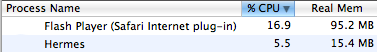

Fast

Hermes beats flash hands down.
Free
Even for users who don't have Pandora One, Hermes is a free application
which works for anyone who uses Pandora.
Usable
Hermes pauses music when your computer sleeps, and it doesn't resume on
wake. It fixes errors and picks up the song right where you left off.
Features
You can like/dislike songs and create/edit/delete stations, just as on
Pandora. Also, things like last.fm integration, and Growl notifications
just aren't possible with Pandora.